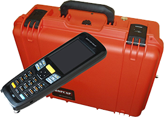

Система контроля и диагностики автотормозного оборудования «Доктор-060АТ»

НАЗНАЧЕНИЕ И ОБЛАСТЬ ПРИМЕНЕНИЯ
СКД «Доктор-060АТ» предназначена для контроля и диагностики автотормозного оборудования локомотива на смотровых канавах и тракционных путях депо, согласно требованиям инструкции ЦТ-533.
ФУНКЦИОНАЛЬНЫЕ ВОЗМОЖНОСТИ
- СКД «Доктор-060АТ» позволяет получать следующие данные:
пределы давления в главных резервуарах;
- время повышения давления в главных резервуарах с 7 до 8 кгс/см²;
- плотность питательной сети;
- плотность тормозной сети;
- плотность тормозных цилиндров и их трубопроводов;
- регулировка и действие крана машиниста усл. № 394;
- регулировка и действие крана вспомогательного тормоза усл. № 254;
- действие комбинированного крана;
- действие воздухораспределителей;
- работа блокировочного устройства.
- Измерение и контроль диагностируемых параметров осуществляется переносным электропневматическим блоком по-
средством установленных в нем датчиков избыточного давления типа «Метран-55-ДИ» и набора микропроцессорных
интеллектуальных модулей (МИМ). Подготовительные операции заключаются в подключении пневматических цепей
локомотива к переносному электропневматическому блоку при помощи рукавов высокого давления, входящих в ком-
плект поставки. Применение технологии передачи данных по радиоканалу позволяет осуществлять дистанционное
управление процессом диагностики с переносного терминала оператора.
ТЕХНИЧЕСКИЕ ХАРАКТЕРИСТИКИ
| Параметры |
Значение |
| Время работы в автономном режиме, час., не менее |
3 |
| Время работы при питании от внешнего источника, час., не менее |
8 |
| Масса, кг |
1,5 |
| Габаритные размеры, мм |
235 х 165 х 88 |